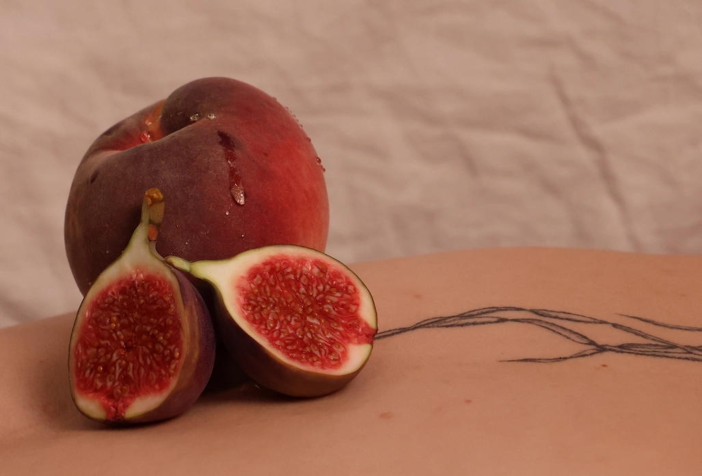
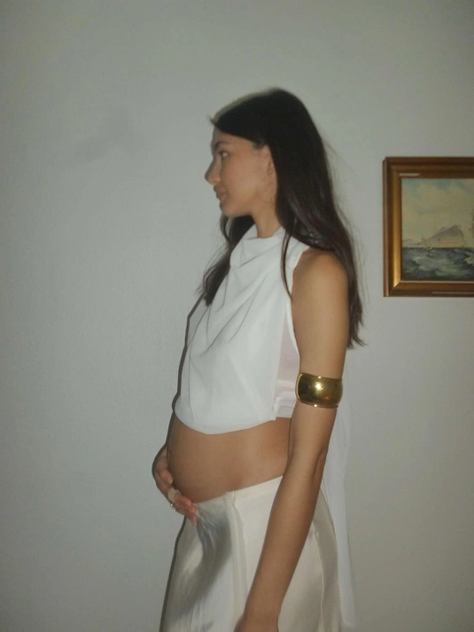
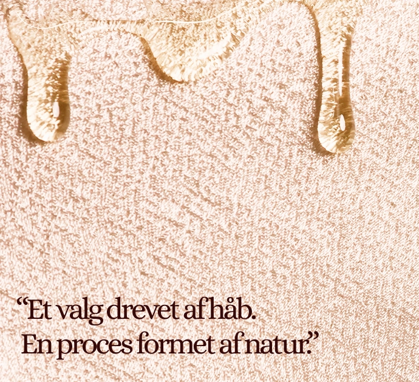

Find donor
Bliv donor
Om os

At blive sæddonor er en enkel, men betydningsfuld måde at hjælpe andre med at skabe liv på.
Vi sørger for, at processen er tryg, diskret og professionel fra start til slut.
bliv donor

